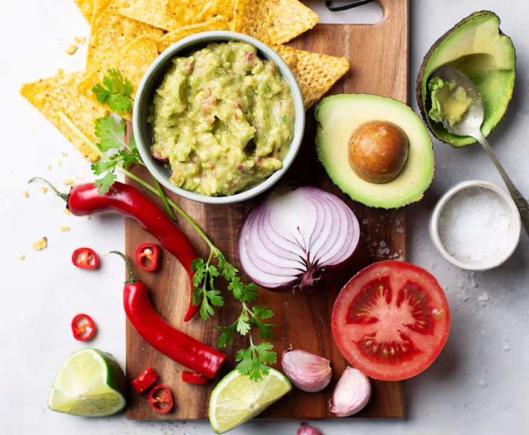

Guacamole
Ingredients
4×
- 200 g de tomates
- 3 à 4 brins de coriandre
- 2 avocats bien mûrs
- 80 g d'oignon
- jus d'1/2 citron vert
- 1 c. à c. de purée de piment
- 1 pincée de sel

Préparation
Étape 1
Mettre 200 g de tomates en quartiers et 3 à 4 brins de coriandre dans le bol, mixer 15 sec/vitesse 5.
Étape 2
Ajouter la chair de 2 avocats bien mûrs, 80 g d'oignon, le jus d'1/2 citron vert, 1 c. à c. de purée de piment et 1 pincée de sel. Mixer 20 sec/vitesse 4 : il doit rester des morceaux.
Étape 3
Garder au frais jusqu’au service.
Conseils
- Laisser les noyaux dans le guacamole pour éviter qu’il noircisse.
- À défaut de purée de piment : 1 pincée de piment de Cayenne ou d’Espelette.